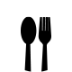
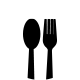

와 제 롤모델이 잡스에요!!! 아이폰 첫 출시되고 나서부터 계속 아이폰 쓰고 있는데 잡스가 너무 그리워요ㅠㅠ 지금은 돈만 벌려고 하는 것 같아서 디자인 발전도 없고ㅠㅠ와 제 롤모델이 잡스에요!!! 아이폰 첫 출시되고 나서부터 계속 아이폰 쓰고 있는데 잡스가 너무 그리워요ㅠㅠ 지금은 돈만 벌려고 하는 것 같아서 디자인 발전도 없고ㅠㅠ와 제 롤모델이 잡스에요!!! 아이폰 첫 출시되고 나서부터 계속 아이폰 쓰고 있는데 잡스가 너무 그리워요ㅠㅠ 지금은 돈만 벌려고 하는 것 같아서 디자인 발전도 없고ㅠㅠ와 제 롤모델이 잡스에요!!! 아이폰 첫 출시되고 나서부터 계속 아이폰 쓰고 있는데 잡스가 너무 그리워요ㅠㅠ 지금은 돈만 벌려고 하는 것 같아서 디자인 발전도 없고ㅠㅠ와 제 롤모델이 잡스에요!!! 아이폰 첫 출시되고 나서부터 계속 아이폰 쓰고 있는데 잡스가 너무 그리워요ㅠㅠ 지금은 돈만 벌려고 하는 것 같아서 디자인 발전도 없고ㅠㅠ
먹스타 맛집
쌀쌀한 날씨 마음까지 녹여주는 맛집 추천
종로 뒷골목에 자리한
역사 깊은 노포 ‘계림’
역사 깊은 노포 ‘계림’
맛집 블로거, 먹스타그래머로 알려진 현상인들이 직접 맛집을 소개한다.
어느덧 한 해의 끝을 알리듯, 찬 바람 부는 계절이 찾아왔다. 가을의 끝자락, 추운 몸과 마음을 달래주는 종로 뒷골목의 노포 식당을 소개한다.
글·사진
송선홍 사원(경영지원팀)
기본에 충실한 계림의 식탁
종로3가와 4가 대로변 뒤편 먹자골목엔 오랜 전통과 내공을 가진 맛집들이 즐비하다. 그중 계림은 종로 뒷골목에서 50년의 세월 동안 닭볶음탕만을 전문으로 하고 있다. 평소 점심, 저녁 시간에는 대기하며 줄을 서야 하기로 유명한 만큼 필자가 찾은 날도 많은 사람이 대기자 명단에 이름을 적고 호명되길 기다리고 있었다. 쌀쌀한 바람을 견디며 대기한 끝에 드디어 계림에 입장. 밖에서 얼핏 보면 협소해 보이지만, 가게 안으로 들어서면 생각보다 널찍한 내부 공간에 놀랄 수도 있다. 또 내부를 가득 메운 손님들은 계림의 인기를 실감케 할 것이다. 50년의 세월 동안 닭볶음탕이라는 메뉴 하나에 승부를 건 계림의 식탁은 조촐하다. 깍두기와 콩나물 두 개의 밑반찬, 그리고 양푼에 가득 담겨온 닭볶음탕. 상다리 부러질 듯한 팔 첩 반상은 아니지만, 가장 중요한 주력 메뉴에 충실한 것이 계림의 인기 비결이다.
매콤한 국물에 마늘 듬뿍 얹은 닭볶음탕
계림의 닭볶음탕은 칼칼한 국물에 다진 마늘을 듬뿍 넣어 맛을 내는 것으로 유명한데, 듬뿍 올라간 다진 마늘이 여기만의 맛을 낸다. 대기할 때 주문한 닭볶음탕은 테이블 착석과 동시에 찌그러진 양은냄비에 가득 담겨 나온다. 닭고기는 거의 다 익혀 나오니 그리 오래 기다리지 않아도 된다. 보글보글 끓이다 보면 잘 익은 밀떡이 국물 위로 떠 오른다. 매콤하면서도 달달한 국물과 잘 익은 떡을 즐기고 나면 본격적으로 ‘닭느님’을 영접할 수 있다. 닭볶음탕의 따끈한 국물이 부르는 소주는 덤이다. 시끌벅적한 계림은 분위기마저도 훌륭한 안줏거리가 된다. 닭볶음탕의 건더기를 다 먹은 후 아쉬움이 남는다면, 라면 사리를 추가하거나 볶음밥을 시켜 먹어도 좋다. 오후 8시 이후부터는 손님이 조금씩 빠지는 분위기이기에 다른 장소에서 1차 식사를 하고 2차로 계림을 찾는 전략적인 선택도 고려해볼 만하다. 단, 계림의 영업시간이 밤 10시까지인 점은 기억하고 가자.
팀 회식부터 연인들까지 계림을 찾는 사람들
많은 사람이 찾는 만큼, 다양한 모임이 계림에서 이루어진다. 소규모 팀 회식부터 옛 기억들을 늘어놓는 동창생 모임, 매콤한 국물과 반주를 즐기는 연인들까지. 대기가 길고 대부분 4인 이하 테이블이기 때문에 대규모 모임을 하기는 어렵지만, 호불호가 나뉘지 않는 메뉴인 탓에 많은 이들의 꾸준한 사랑을 받고 있다. 또한, 새롭게 단장한 세운상가와 종로3가역 12번 출구 사이에 있어 접근성 역시 나쁘지 않다. 또 골목길에 있지만 낯선 외지인에게도 설명하기 어렵지 않기에 약속장소로 부담스럽지 않다. 가을에서 겨울로 넘어가는 쌀쌀한 이 계절, 계림에서 ‘내 영혼의 닭고기 수프’를 찾아보길 추천한다.
Info
-
 서울 종로구 돈화문로4길 39
서울 종로구 돈화문로4길 39 -
 02-2263-6658
02-2263-6658 -
 11:30 ~ 22:00 (식사류는 평일 17:00, 주말 15:00까지)
11:30 ~ 22:00 (식사류는 평일 17:00, 주말 15:00까지) -
 
닭볶음탕 (소) ￦22,000 / (중) ￦32,000 / (대) ￦44,000

닭볶음탕 (소) ￦22,000 / (중) ￦32,000 / (대) ￦44,000
볶음밥, 칼국수, 라면 사리 ￦2,000
-
최고예요
322
-
좋아요
322
-
슬퍼요
322
-
그저 그래요
322
-
화나요
322